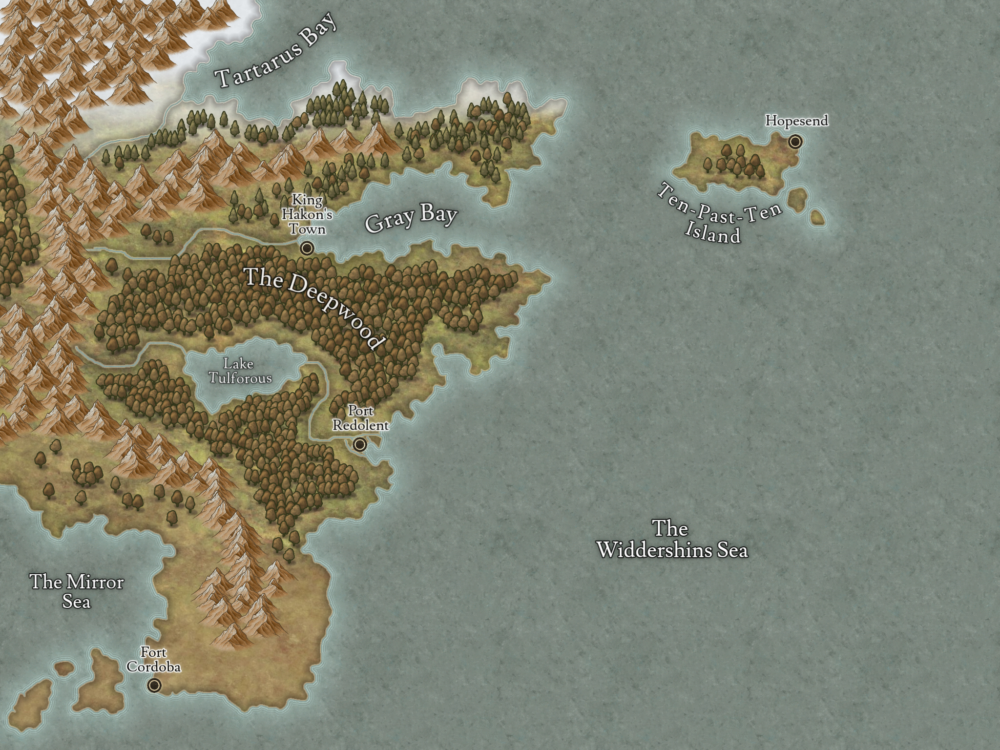

The World of 1668

We got pirates, we got cults, we got pirate cults and aliens.
There's a wacky new continent to explore and an old continent with politics and shit.
There's swords, magic and muskets, but fantasy beings are quite rare (in the explored bits of the world) and everyone plays a human.
Geography:
Major Bodies of Water
Organizations:
Political Organizations
- The Noonday Company
- The Clock Makers
- The Lachrymose Masks
- The Free Beladonian Army
Crime Syndicates
- The House
- The Seven Rivers Gang
- The Midnight Navy
Publicly Accepted Religions
- Hastur the Cloud Shepherd
- Mother Magdalena
- The Gray Path
- The Golden Locust
- Evening Glory
Religions that get Persecuted
- The Emperor of the Void
- Horned Mammon
- Our Lady of Decay
- The God that Crawls